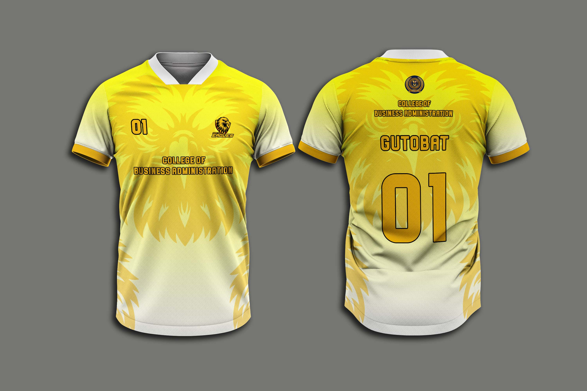
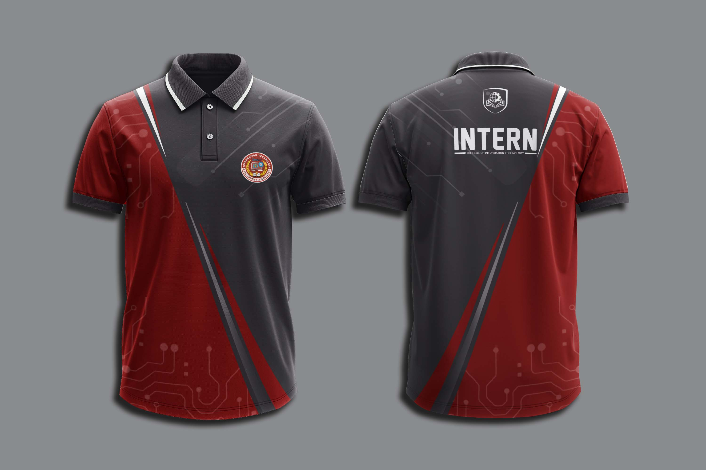

This graphic design project focuses on creating a yellow volleyball jersey that combines style, comfort, and team identity. The design was requested by the client and was inspired by the emblem of the department, incorporating visual elements and motifs that reflect the department’s identity and values. It uses bold colors, dynamic patterns, and sporty elements to represent energy, teamwork, and competitiveness in volleyball.
This graphic design project focuses on creating a maroon and gray uniform design for interns, combining professionalism, comfort, and department identity. The design was requested by the client and uses the official colors of the IT Department, with maroon and gray representing professionalism, innovation, and unity.
